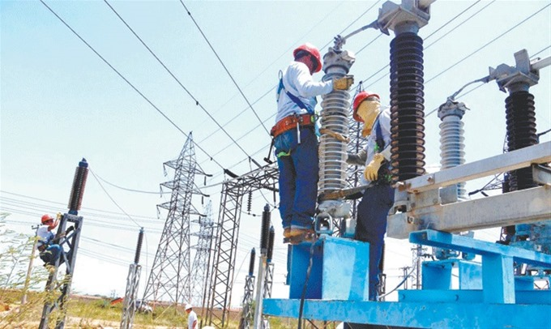

Toggle navigation
Inicio
About
Services
Contact
Rga Soluciones
Portafolio de Rga Soluciones Ltda
Servicio De Consultoria
Calidad De La Energia.
Calidad De La Energia.
Corrección de factor de potencia
Estudios de flujos de carga
Análisis de cortocircuito
Coordinación de protecciones
Uso racional de la energía
Auditorías energéticas
Perdidas Técnicas De Energia.
Perdidas Técnicas De Energia
Diagnóstico de pérdidas técnicas de energía
Elaboración, implantación y seguimiento de planes de reducción de pérdidas técnicas
Diseño de esquemas de distribución de energía para la reducción y control de pérdidas no técnicas
Definición de estrategias para la reducción de las pérdidas técnicas
Consultoria En Recursos Humanos.
Consultoria En Recursos Humanos.
Estudio de clima organizacional
Manuales de roles y funciones
Evaluación y selección de personal
Capacitación
Mejora De Procesos.
Mejora De Procesos.
Diagnósticos de procesos
Optimización de procesos
Definición de alternativas de mejora
Desarrollo e implantación de Normativas
Implantación de procesos
Investigaciones de mercado
Perdidas No Técnicas De Energia.

Diagnóstico de pérdidas no técnicas de energía
Diseño, implantación y seguimiento de planes de reducción de pérdidas no técnicas
Diseño, implantación y seguimiento de planes para el sostenimiento del indicador de pérdidas no técnicas
Elaboración de planes de mejora a los proyectos de reducción y control de pérdidas existentes
Diseño de esquemas de distribución y medición para la reducción y control de pérdidas no técnicas
Contactenos
Rga Soluciones
Dirección: Cra. 57 No. 72 - 25 oficina 502
Colombia, Barranquilla
Telefono:
(+57) 3049832
314-5899570 / 313-5331076
Email:
aseguram@rgasoluciones.com